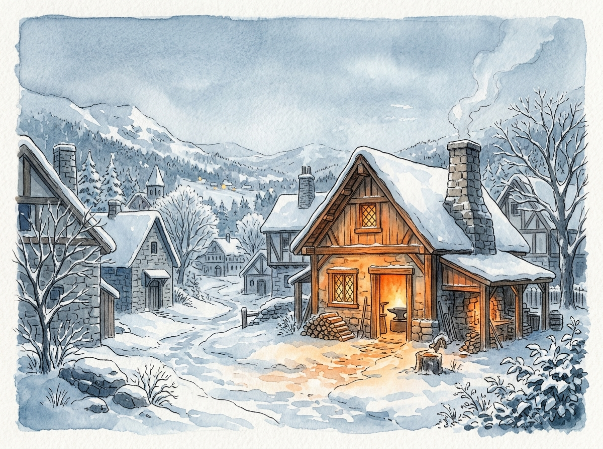
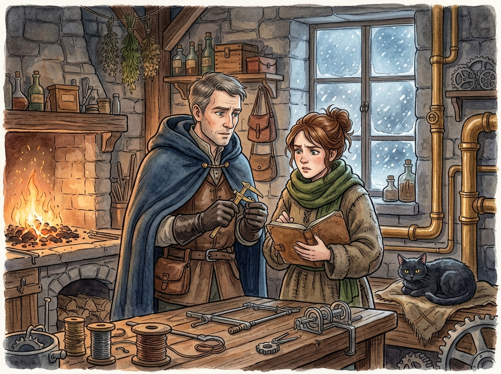
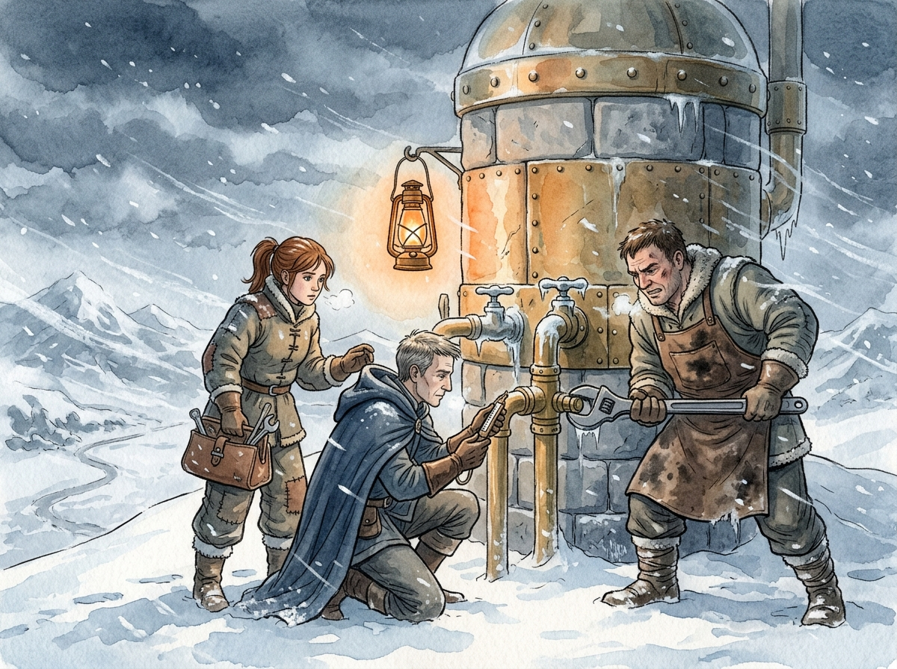
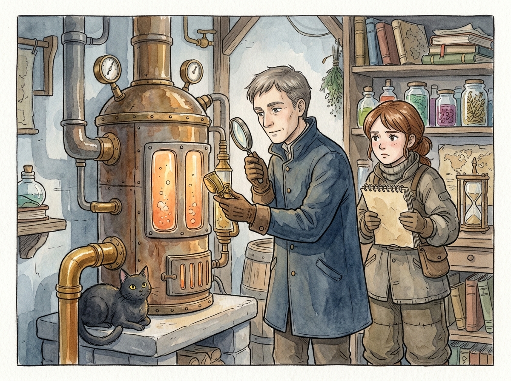
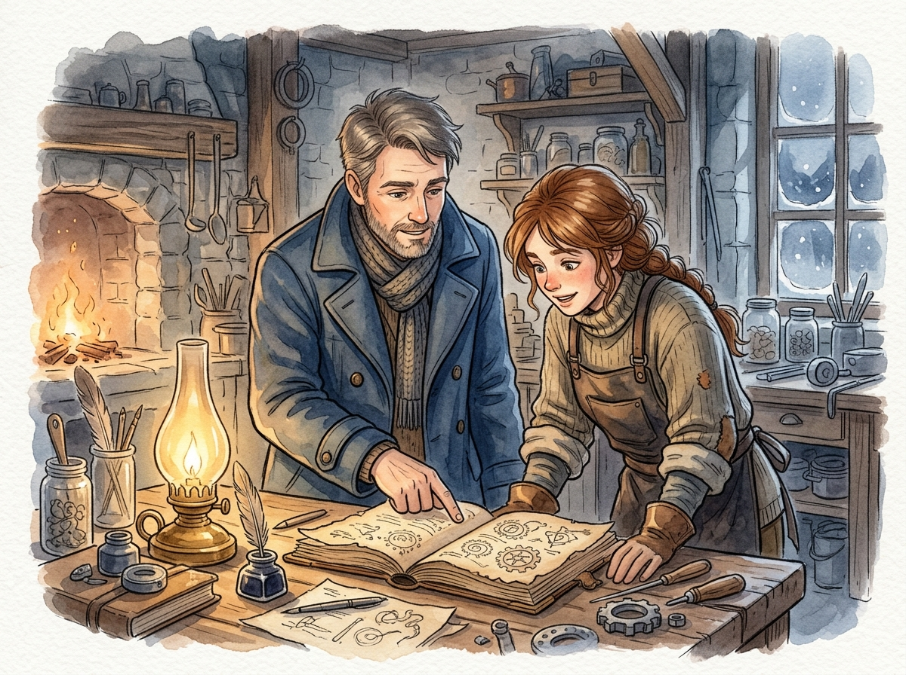
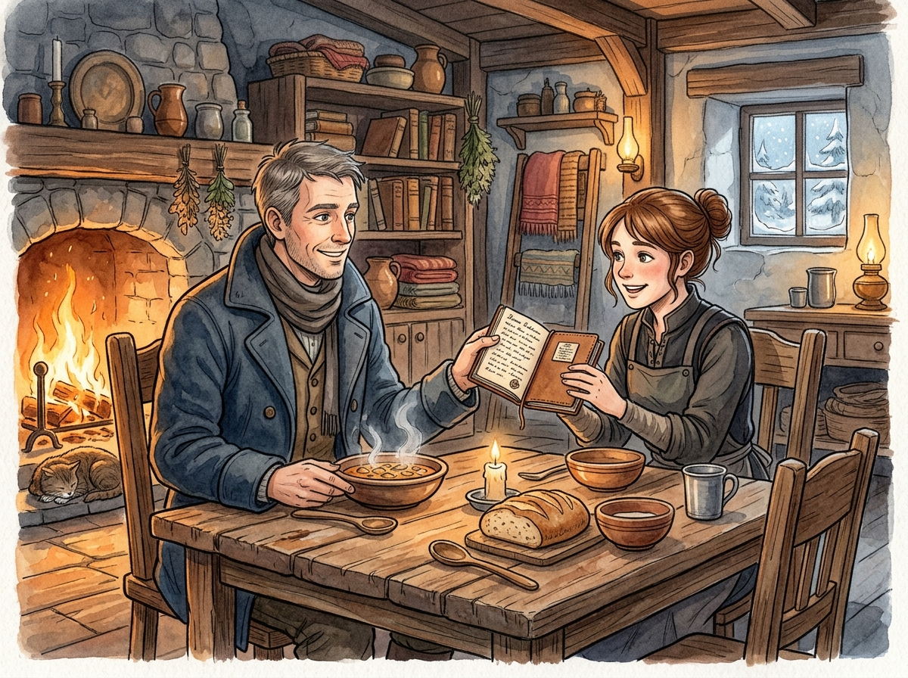
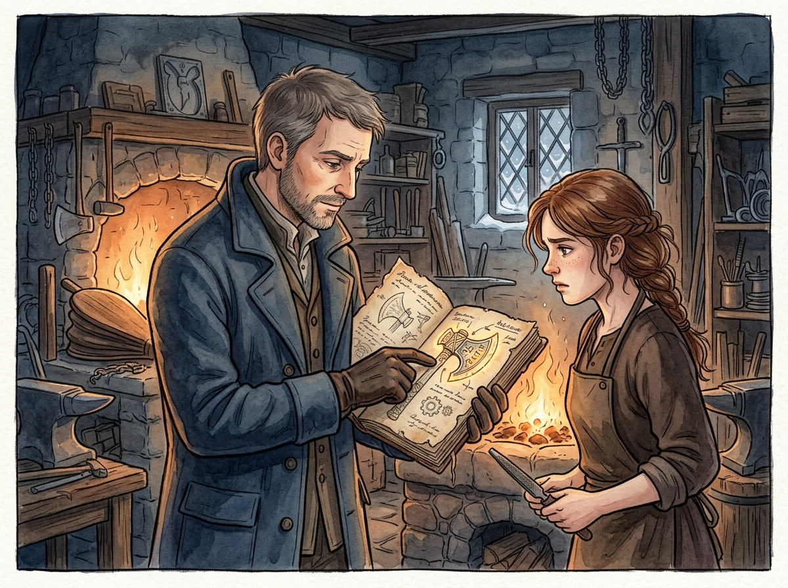
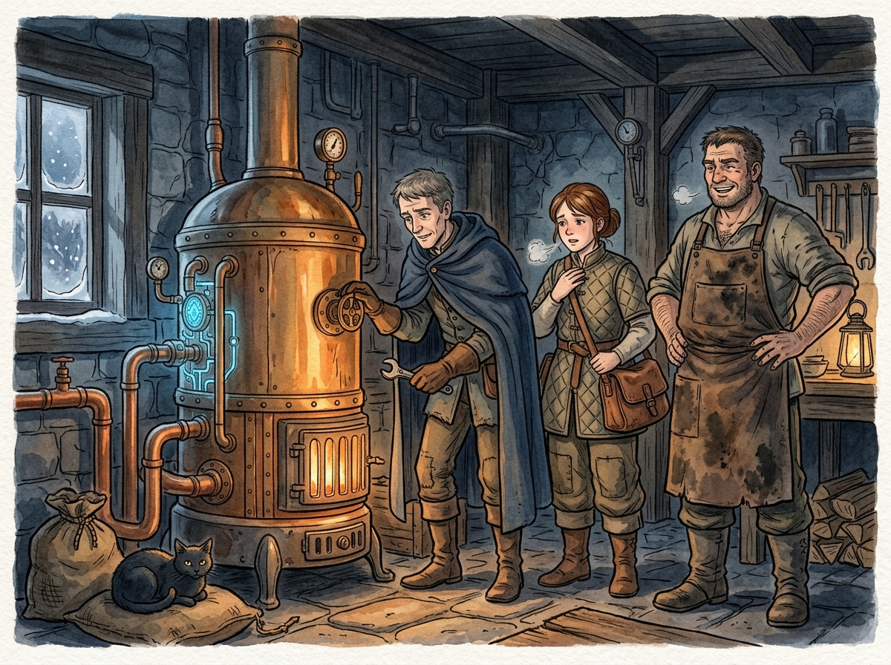
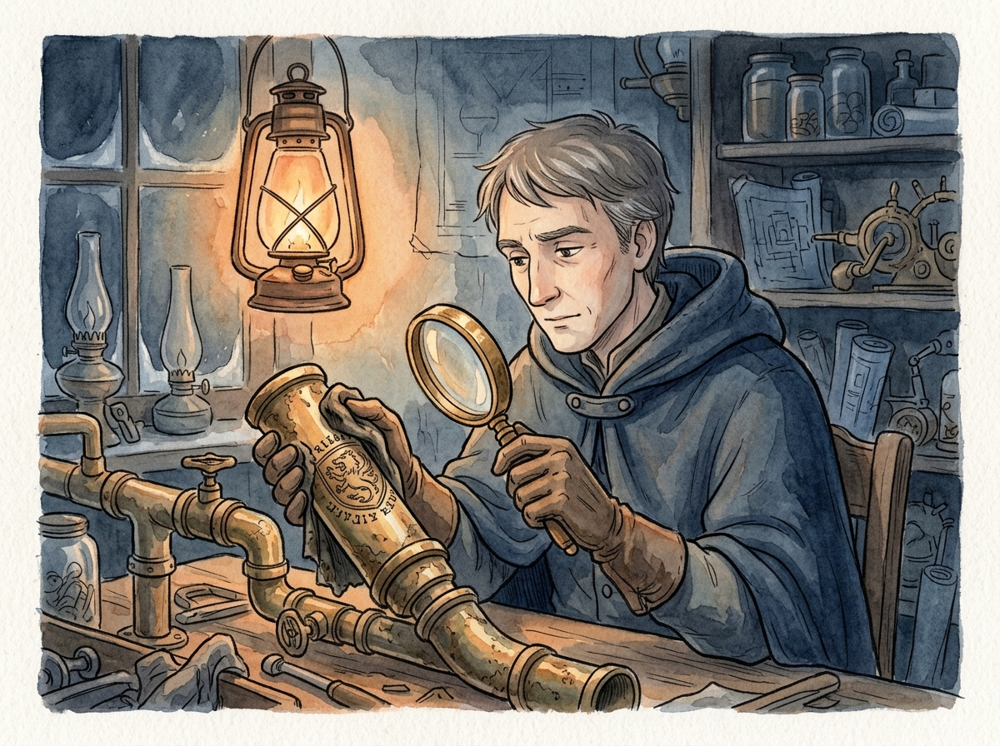

辺境工房の品質管理官――壊れた魔導具より、壊れた仕組みを直します

第一話 六台の給湯器
「おい、リオ！ 起きろ！ 街中が氷漬けになる前に来い！」
荒々しく木製の扉を叩く音と、隙間風が運ぶ雪混じりの冷気に、リオ・カーデンは意識を引き戻された。
ベッドから起き上がると、吐く息が白く凍っている。薄暗い部屋の窓ガラスには、氷の結晶がシダの葉のような幾何学模様を描いて張り付いていた。
ここは辺境の町ベルクの端にある「灰炉（はいろ）工房」。リオが王都の魔導院からこの寂れた工房へ左遷されて、まだ二週間だ。
リオが丸眼鏡をかけ、薄い毛布を跳ね除けて作業場へ出ると、赤黒い顔をさらに強張らせた工房主のガルド親方が、吹雪の雪を肩に乗せたまま仁王立ちになっていた。炉の脇では、黒い毛並みに灰をまぶしたような居候猫の「コゲ」が、寒さに体を丸めながら、リオを頼りなげに見上げている。コゲはリオが近づくと、寒さに震える足元へすり寄ってきて、かすかな体温を分け合おうとした。

「何事ですか、親方。まだ夜明け直後ですが」
「給湯器だ！ 共同浴場、それに『冬桜亭』『北風の外套』『角笛屋』の宿三軒、おまけにハンスの診療所とセラの食堂まで、街の魔導給湯器が六台同時に火を消しやがった！ 外はマイナス十度の吹雪だ。日没までにせめて診療所と食堂の二台だけでも動かさねぇと、老人と病人が凍え死ぬ。日没まであと八時間もねぇんだぞ！」

ガルド親方の悲鳴に近い怒鳴り声が、冷え切った作業場に響き渡った。
「魔石の品質不良に違いねぇ！」ガルドは、凍りついた鉄の作業台を拳で叩いた。金属質の重い音が響く。「最近入った王都商会の魔石は、安かろう悪かろうの粗悪品だったんだ。火力が急激に落ちて燃え尽きやがった。今すぐ王都に代替品を注文するぞ！」
「お待ちください、親方」
リオは作業台の上に散らかった測定器の目盛りを睨みながら、静かに、しかし断固とした口調で遮った。
「この吹雪です。王都からの山越えの便はすべて止まっている。代替品が届くのに何日かかるか分かりません。それに、魔石の品質不良という見立ては、統計的に不自然です」
「あんだと？ 統計だのなんだの、王都の理屈をこねるな！ 現に火が消えてるんだ！」
「六台の給湯器は、それぞれ設置された時期も、日頃の使用量も、魔石の摩耗度も異なるはずです。それらが、この吹雪の朝に、全く同じタイミングで一斉に機能停止する確率など、ほぼゼロに等しい。もし魔石の寿命なら、数日のズレが生じるのが道理です。何か別の、すべての給湯器に共通する『単一の外部要因』があるはずです」
リオの脳裏には、王都魔導院で何百件もの現場事故や不具合を切り分けてきた経験則が、明確な論理となって組み上がっていた。
「魔石を交換する前に、まずは現地へ行き、不具合の再現条件と実態を調査すべきです。私は、給湯器本体ではなく、給湯システム全体に異常が発生していると推測します」
「チッ、相変わらず理屈っぽい王都の役人めが……。だが、お湯が出なきゃ街の奴らが死ぬのは本当だ。ミナ！ お前もリオに付いていけ！」
ガルドの指示に、工房の隅で震えていた十九歳の見習い職人、ミナ・フェルが「は、はい！」と慌てて返事をした。彼女は薄い外套を羽織り、分厚い革の工具鞄と、ぼろぼろになった羊皮紙の帳面を抱えてリオの後を追った。

吹雪の街ベルクは、白い闇に包まれていた。
通りは吹き溜まりで歩きづらく、一歩進むごとに骨の髄まで冷えるような寒気が肌を刺す。ここからは吹雪の合間に、煙突から煙を上げられないベルクの冷え切った街並みが一望できた。普段なら温かい湯気があちこちから立ち上るはずのインフラが、完全に沈黙している。その光景は、リオに自分の背負う仕事の重みを再認識させた。
ミナは寒さに歯をガタガタと鳴らしながら、一生懸命にリオの背中を追っている。その足元を、いつの間にか工房から抜け出してきたコゲが、吹雪の中を「こっちだ」とばかりに尻尾を立てて先導するように歩いていた。
「リオさん……その、リオさんは王都の大きなお役所で、偉いお仕事をされていたんですよね？ なんで、あんなに丁寧にお話しされるんですか？ ガルド親方なんて、いつも怒鳴ってばかりなのに」
ミナが雪を避けながら不思議そうに尋ねてきた。リオは丸眼鏡の位置を直しながら静かに答える。
「不具合を調べる時、相手を威圧しても良いことは何もないからだよ。人は怯えると、都合の悪い事実を隠したり、記憶を曖昧にしたりする。私たちは、機械と、そしてそれを扱う人間から、ただ正確な事実だけを聞き出さなければならないんだ」
「事実、ですか……」
ミナは小さく呟き、抱えた古い帳面を愛おしそうに、しかしどこか悲しげに強く握りしめた。
「あの、私……この帳面に、いろいろ街の魔導具の様子とかを書き留めてたんです。でも親方には『帳面なんか書いてる暇があったら、一本でも多くネジを締めろ！ 紙とインクの無駄遣いだ！』って何度も怒られて……。だから、もう捨ててしまおうと思ってたんです」
吐き出されたミナの言葉には、自分のやってきた地道な努力を頭ごなしに否定されてきた悔しさと寂しさが滲んでいた。リオは歩みを止めず、前を見据えたまま言った。
「記録を否定する者は、過去の失敗から学ぶ機会を自ら捨てているのと同じだよ、ミナ。私は君のその帳面を、無駄だとは絶対に思わない」
リオの言葉に、ミナはハッとしたように顔を上げ、かじかんだ指先で再び帳面を強く抱きしめた。
二人はまず、坂下にあるセラの食堂「木漏れ日亭」へと駆け込んだ。
普段ならスープの温かい湯気とスパイスの香りで満ちている店内は、厨房から客席まで氷室のように冷え切っていた。店主のセラは、普段の活発な面影を潜め、何枚も重ね着した毛布の中で白い息を吐きながら立ち尽くしている。

「リオさん、ミナちゃん！ よく来てくれたわ。見ての通り、朝から一滴もお湯が出ないの。これじゃ昼の仕込みもできないし、こんな大雪の日に街の連中に温かいスープの一杯も出してやれないわ」
「すぐに調べます。セラのところの給湯器は、確か裏手の配管から直接繋がっていましたね」
リオは給湯器の前にひざまずき、前面の鉄カバーを取り外した。金属製のカバーは指が張り付くほど冷え切っている。リオは携帯用の小型魔導温風器を起動し、凍りついたネジや手元を温めながら、精密な手つきで作業を進めていく。
給湯器の心臓部である赤魔石は、淡い光を放ったままスロットに収まっていた。魔力は枯渇していない。
「魔石は生きている。だが、安全弁のレバーが下がっているな。魔導流の供給路が物理的に遮断されている」
リオは携帯型の魔力測定器を取り出し、凍える指先で測定針の角度を微調整しながら、魔力の微小な揺らぎを数値に変えていく。
「ミナ、読み上げる数値を帳面に記録してくれ。第一魔導節点、魔力圧、点二五。第二魔導節点、ゼロ……」
「はいっ！ 第一節点、点二五……第二節点、ゼロ……」
ミナはかじかむ指でインク瓶を持ち、羽ペンを走らせる。
厨房の片隅では、近所のなじみの運送屋の男が暖を取るために座り込んでおり、「なあ、リオの旦那。魔石の通りが悪いんじゃねえのか？ この寒さで魔力が凍りついちまったとかよ」と口を出した。
「魔力自体は凍りつきません」リオは測定器の針を睨みながら答えた。「しかし、配管内の流体圧の変化によって検知弁が作動することはあります。魔石そのものに異常はありませんね」
「へえ、そいつは不思議だな。魔石じゃねえなら、一体何が起きてるんだ？」
男は感心したように髭を撫でた。厳しい自然の中で生きる住民たちも、凍結や魔導具の癖については彼らなりの知識を持っている。リオはその現場の声にも耳を傾けつつ、確実なデータを集めていった。
次に、二人は街の診療所へと急いだ。
診療所の状況はさらに緊迫していた。高齢の患者や幼い子供たちが、毛布を幾重にも被せられてベッドで丸くなっている。医師のハンスが、凍える患者の手をさすりながら、焦燥の混じった声でリオに言った。
「リオ、暖房用の温水パイプまで冷え切ってしまった。このままだと、肺を病んでいる患者たちの容体が悪化する。日没までにせめてこの部屋だけでも温められるようにしてくれ」
「全力を尽くします」
リオは診療所の地下にある大型の給湯・暖房複合機に向かった。ここもまた、セラの食堂と同様に、魔石の魔力は十分であるにもかかわらず、安全検知弁が完全に作動して回路を遮断していた。
リオは各箇所のバルブ、配管の接続部を一つ一つ目視と触診で確認し、記録を重ねていく。
宿三軒の調査も同様に行い、すべてのデータが出揃った。
工房に戻ると、リオは作業台の上に六台分の測定データを書き出した。
「六台すべてにおいて、不具合現象は共通しています。第一に、魔石の異常摩耗や欠陥ではない。第二に、停止は検知弁の物理的遮断によるもの。そして第三に、停止したと推測される時刻は、すべての場所で夜明け前の午前四時半から五時の間に集中している」
「だから言ったろ、やっぱり魔石の品質が一斉に落ちたから――」とガルドが息巻く。
「いいえ、親方。もし魔石の出力低下なら、検知弁が落ちるのではなく、単に出力が漸減し、ぬるい湯が出るようになるはずです。検知弁が物理的に落ちるということは、配管システム内で『急激な流体圧の変動』が起きた証拠です」
リオは腕を組み、考え込んだ。
「だが、なぜ午前四時半なのか。その時間帯は、街全体で最も給湯器の使用量が少ない、いわば静的状態のはずだ。なぜその時に圧力の急変が起きる？」
その時、ミナが遠慮がちに、しかし自分の古い帳面を抱きしめるようにして、リオの横へ進み出た。
「あの……リオさん。これ、何の関係もないかもしれないんですけど……」
ミナは、ガルドからの叱責を恐れるように少し肩をすくめながら、帳面を開いて差し出した。
「私、夜警の仕事のついでに、街の配管の音を聞くのが癖で……。ここに、その時間帯の記録があって」
リオはミナの帳面を受け取り、指でなぞった。そこには驚くほど精密な観察日記が記されていた。

『三日前、午前四時四十分。外気温マイナス六度。北風強し。共同浴場の裏手で「ヒュー」という笛のような高い音が五分間響く』
『二日前、午前四時三十五分。外気温マイナス八度。風は穏やか。角笛屋の配管から「ゴロゴロ」と水が踊るような振動音あり』
『昨夜、午前四時二十分。外気温マイナス十度。無風。街全体の配管の奥から、空気を吸い込むような「シュー」という長い異音が発生』
リオの眼鏡の奥の目が、鋭く見開かれた。
「空気を吸い込む音だ」リオはミナの帳面を指で叩いた。「ミナ、この音がした時間帯の、街の様子は？」
「ええと……みんな寝静まっていて、お湯はどこも使ってない時間です」
「そう。配管内の流体圧が下がり、静的な状態だった。そこへこの極寒だ。配管のどこかが冷気で縮み、隙間ができたらどうなる？」
ミナはハッとしたように目を見開いた。「外の空気が、その隙間から中に吸い込まれる……？」
「その通り。そして夜明けに皆が一斉に蛇口を開き、魔導流が動き出した瞬間、その巨大な気泡が配管を駆け抜ける。給湯器の検知弁は、その急激な圧力の暴れ――流体衝撃（水撃）を『配管破裂の危機』と誤認して、一斉に弁を閉じたんだ。これが、六台が同時に停止したメカニズムだよ」
ガルド親方は口を大きく開けたまま、リオとミナの顔を交互に見た。
「じゃ、じゃあ、原因はその空気を吸い込んでる隙間ってことか？ それはどこにあるんだ？」
「街全体の給湯器へ同時に空気を送り込める場所は、一箇所しかありません。街の最上部、すべての配管の起点となっている『圧力調整槽』です」
吹雪はいよいよ勢いを増していた。
リオ、ミナ、ガルド親方の三人は、顔を覆う外套をきつく締め、街の最上部にある石造りの調整槽へと向かった。
調整槽の鉄扉を開けると、内部はゴーという不気味な水鳴りと、凍てつく冷気に満ちていた。
その水槽の傍らで、先回りしていたコゲが、特定の配管接続部の下で香箱座りをしている。
「コゲ、そこが寒いのか？」
リオが近づき、コゲが指し示す配管の継手（エルボ）に手を当てた。
「やはりここだ。この継手、表面の結露が白く凍りついている。マイナス十度という極低温の冷気によって、金属が設計限界を超えて収縮し、ネジ山に目に見えない隙間ができている。ここから空気を吸い込んでいるんだ」
「よし、今すぐその継手を外して、予備の部品と交換するぞ！」
ガルドが工具を構えたが、リオはそれを手で制した。
「待ってください、親方。この猛吹雪の中、主配管の継手を外せば、街全体の給湯を完全に停止させなければなりません。この冷気です。数時間も水を止めれば、すべての配管内の水が凍結し、膨張して破裂します。そうなれば、ベルクの給湯システムは完全に崩壊する」
「じゃ、じゃあどうすんだよ！ このままじゃ、夜には診療所の奴らが凍え死ぬぞ！」
「部品の完全交換ではなく、応急処置で隙間を塞ぎ、温度を維持します。ネジ部の隙間に、融点が高く粘着性の強い『羊毛脂（ラノリン）と黒鉛粉末の混合ペースト』を塗り込み、空気の侵入経路を物理的に遮断する。その上から、羊毛の断熱材と防水布を幾重にも巻き付け、親方の力でしっかりと締め上げてください。これで配管内の温水の熱が保たれ、これ以上の収縮と吸気を防げます」
リオは的確に指示を出した。
「ミナ、ペーストの調合を。黒鉛は潤滑とシールの隙間埋めに役立つ。羊毛脂は冷えても硬化しきらず、粘着性を保つ」
「はい！」
ミナはかじかむ手で薬瓶から材料を取り出し、へらで素早く練り合わせた。
ガルド親方は、凍りついた配管の周りをバーナーの魔力火で慎重に温める。金属が熱を得てわずかに膨張し、異音が止まった瞬間、ミナがペーストを隙間に擦り込んだ。
「よし、親方、締め上げてください！」
「おお、任せとけ！」
ガルドの太い腕が、麻布と防水布を凄じい力で配管に巻き付け、固定していく。
リオは水圧計の針を凝視していた。
激しく小刻みに揺れていた針が、ゆっくりと中央の安定値へと戻り、ぴたりと静止した。
「……吸気、停止しました。配管内の圧力が安定しています」
リオの声に、全員が安堵の息を吐き出した。
診療所とセラの食堂の給湯器の安全弁をリセットし、再び魔石の回路を接続すると、ごうごうという力強い稼働音が建物内に響き渡った。
蛇口から勢いよく、真っ白な湯気が立ち上り、冷え切っていた配管がみるみる熱を帯びていく。

「お湯が出たわ！」
セラの弾んだ声が、木漏れ日亭の厨房に響いた。彼女はすぐに腕まくりをし、大釜に湯を満たして仕込みを開始した。
一時間後。
食堂のテーブルには、大きな木のお椀が三つ、並べられていた。
「ほら、熱いうちに食べちゃって！」
差し出されたのは、カブや人参、ジャガイモといった地元の根菜がごろごろと入り、程よく塩気の抜けた塩漬け肉の塊が黄金色のスープに沈んだ、特製の温かい汁物だった。
リオがスプーンでスープをすくい、口に運ぶ。
じわりと、温かさと塩気、精度高く引き出された肉の旨味が、凍えきった身体の隅々にまで染み渡っていった。カブは口の中でとろけるように柔らかく、塩漬け肉の脂身がスープに深いコクを与えている。
「……美味しいですね」
リオの呟きに、ミナは「はい……生き返ります……」と、真っ赤になった鼻をすすりながら嬉しそうに微笑んだ。
コゲはリオの足元に体をすり寄せ、温かいスープの匂いを嗅ぎながら気持ち良さそうに目を細めている。
ガルド親方は無言で豪快にスープをかき込み、お椀をテーブルに置くと、ふぅと長い息を吐き出した。それから、少し決まり悪そうにミナの方を見た。
「ミナ。お前のあの帳面……今まで無駄だなんて言って悪かったな。お前が毎日コツコツ書き溜めてた記録がなきゃ、今回は本当にお手上げだった」
不器用ながらも、ガルドは直接ミナに向かって頭を下げた。ミナは驚いたように目を見開き、それからじわじわと目元を赤く染めて、お椀を抱える手に力を込めた。
「親方……。私、役に立ったんですね。無駄じゃなかったんですね……」
「ああ、大したもんだ」ガルドはぶっきらぼうに、しかし温かく頷いた。
「無駄な記録などありません」リオは静かに、しかし確信を込めて語りかけた。「事実の積み重ねだけが、不具合を解決する唯一の道です」
夕暮れ時、吹雪がようやく小康状態となり、ベルクの街に穏やかな夜の影が落ち始めていた。
灰炉工房の作業場では、炉の近くで黒猫のコゲが喉をゴロゴロと鳴らしながら、温まった床の上で丸くなっている。
リオは作業台の背後にある板壁に、一枚の大きな羊皮紙を貼り付けた。
そこには、縦横に細かく線が引かれ、いくつかの項目が整然と書かれた表があった。
「リオさん、これは何ですか？」
ミナが不思議そうに尋ねる。
「『日常点検・不具合予兆検査表』です」とリオは説明した。
「今日から、この工房で扱うすべての魔導具と、街の共有設備について、この表に基づいて毎日測定を行います。項目は、外気温、動作音の異常、魔力伝導率、接続部の目視確認。そして、それをこの表に『記録』していくんです。不具合が起きる前に、その予兆を捉えて防ぐ仕組みを作ります」
リオはミナの目を見た。
「ミナ。君のその観察眼と、毎日コツコツと記録を続ける能力は、立派な専門技術です。私がガルド親方と話し合い、承認を得ました。今日から君を、灰炉工房の正式な『品質検査担当』に任命します。君の集めたデータをもとに、私が不具合の発生を未然に防ぐ仕組みを作ります。どうでしょうか」
「品質検査……担当……」
ミナはその言葉を口の中で繰り返し、それから弾むような笑顔で深く頷いた。
「はい！ やります！ 私、街中の配管と給湯器の音を、今まで以上にしっかり記録します！」
「頼みます。これからは、君の記録がこの工房の標準になる」
背後で片付けをしていたガルド親方が歩み寄り、リオにぽんと小さな革袋を差し出した。中からチャリンと重い金属音がする。
「ハンスの野郎が『これからは毎月リオに見てもらえ』って、定期保守の前金を置いていきやがった。宿の連中も同じように頼みたいってよ。おいリオ、お前の『仕組み』とやらで、この街の魔導具を頼むぞ」
工房に、確かな「信用」と「新しい仕事」が残り始めた瞬間だった。
夜、工房の明かりの下で、リオは一人、昼の応急処置の際に測定のために取り外した、摩耗した古い継手を机の上に置いていた。
窓の外は静まり返り、冷たい月光が雪原を照らしている。
リオは拡大鏡を手に取り、古い真鍮の継手をランプの光にかざした。付着した煤と結露を指先で拭う。
金属の肌に、小さく、だが容赦のない明瞭さで刻まれた意匠が浮かび上がった。
「……双頭の鷲と、傾いた天秤」
リオの指先が、かすかに震えた。
脳裏に蘇るのは、十年前、王都の雪夜に燃え盛った高級邸宅の炎。そして、その不具合原因を「異常収縮による破裂」と告発した自分の報告書を、嘲笑と共に握りつぶした魔導院の幹部たちの顔だ。あの時、闇に葬られた不具合と、全く同じ欠陥部品の刻印。

王都では使用禁止、製造禁止となり、すべて廃棄されたはずの欠陥部品が、なぜ辺境の街に紛れ込んでいるのか。
たまたま古い在庫が流れてきたのか、それとも……。
リオは奥歯を噛み締め、冷たい金属の継手を机の引き出しの奥へと仕舞い込んだ。
不具合の裏には、常にそれを作り出した「人間の歪み」が存在する。
「壊れた魔導具より、壊れた仕組みを直す……か」
リオは自嘲気味に呟き、ランプの火を消した。暗闇の中、辺境の小さな工房での新しい日々が、王都での過去と、思わぬ形で繋がっていく予感だけが残されていた。